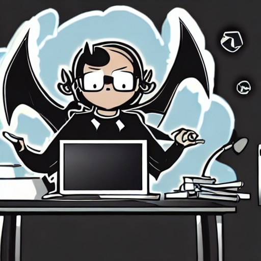

Draco Era
Web developer
CAREER OBJECTIVE
I am a beginner web developer. This is the first capstone project that I created.
I am on a journey guided by Dr.Angela Yu to become a full fledged web developer.
So far I have enjoyed this course, I hope to do so as well in future.
EDUCATION
Bachelor of technology
AI and DS
August 2023-ongoing
WORK EXPERIENCE
No job experience
SKILLS
- Python and C progamming
- Bourne Shell, SQL
- HTML

CONTACT
HOBBIES